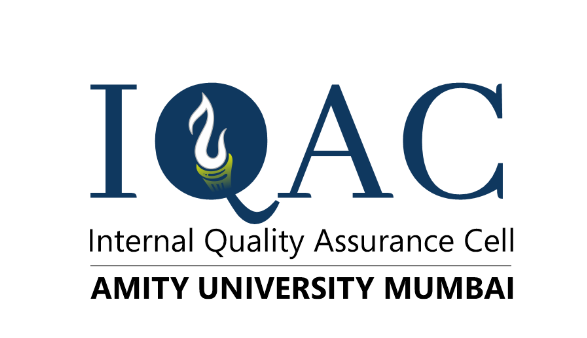
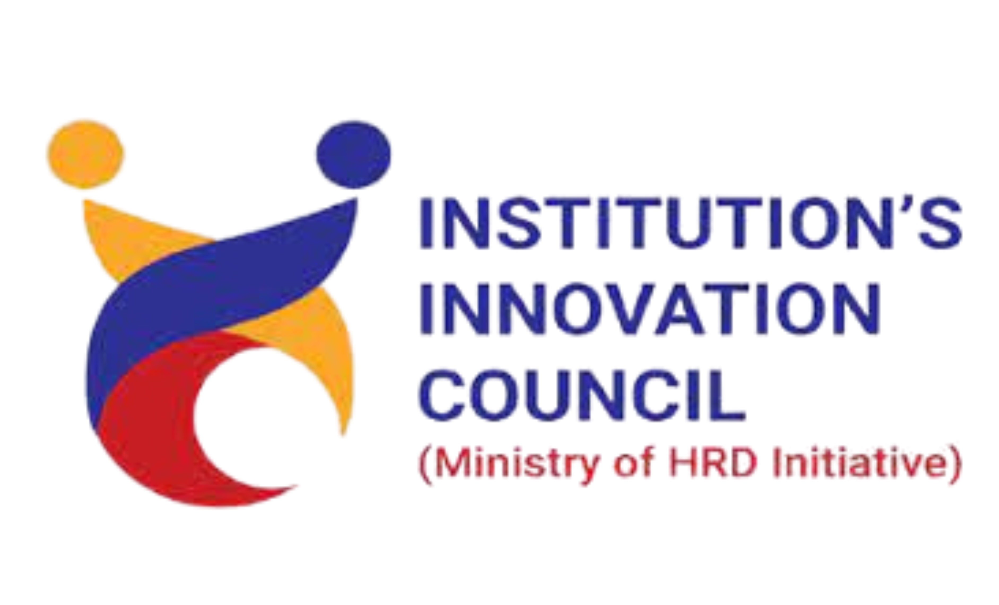

Amity School of Communication • Amity University Mumbai • Presents
SMAC 2026
International Conference on Smart Media, AI and Emerging Communications



International Conference on Smart Media, AI and Emerging Communications



Reimagining Media, Communication and Society in the Age of Artificial Intelligence
Exploring the Future of Smart Media, Artificial Intelligence, Digital Storytelling and Emerging Communication Technologies
Amity University Mumbai stands as one of the leading private universities in India's higher education landscape, known for its strong commitment to academic excellence, innovation, research, and industry-oriented learning. Established as part of the Amity Education Group, the university carries forward a legacy of building globally relevant institutions that combine rigorous academic training with professional readiness.
Amity University Mumbai represents a modern, ambitious, and academically dynamic institution committed to nurturing future-ready graduates, advancing interdisciplinary scholarship, and creating meaningful impact through education — making it an inspiring host for SMAC 2026.
Amity School of Communication, Amity University Mumbai is a dynamic academic space dedicated to advancing excellence in media education, communication research, creative practice, and industry engagement. It has emerged as an important centre for developing future media professionals, communication scholars, storytellers, and digital innovators.
As the organizing institution of SMAC 2026, Amity School of Communication is well positioned to host a scholarly platform bringing together discussions on AI, smart media systems, digital storytelling, emerging pedagogies, and the future of communication.
"Reimagining Media, Communication and Society in the Age of Artificial Intelligence"
SMAC 2026 explores the rapidly transforming landscape of media, communication, and digital culture in an era shaped by AI and intelligent technologies. As media ecosystems evolve through algorithmic platforms, generative AI, immersive storytelling, data-driven communication, and automated content systems, the boundaries between technology, creativity, and communication practices are being fundamentally redefined.
Bringing together scholars, researchers, practitioners, and students, SMAC 2026 aims to foster critical conversations on innovation, ethics, governance, and the societal implications of AI-driven communication systems.
SMAC 2026 aims to create an interdisciplinary platform to critically examine the transformative role of artificial intelligence and emerging technologies in reshaping media and communication landscapes. The conference seeks to encourage scholarly dialogue on opportunities, challenges, and ethical implications of these transformations.
SMAC 2026 aspires to promote research at the intersections of smart media technologies, digital storytelling, communication innovation, media governance, and audience engagement — fostering collaboration between academia and industry to advance critical thinking and responsible innovation.

Hon'ble President and Chancellor
Amity University Mumbai

Hon'ble Vice Chancellor
Amity University Mumbai

Director/Head of Institution
Amity School of Communication & Amity Film School Mumbai

Co-Convener, SMAC 2026
Amity School of Communication
Maryland, USA

United States of America
Original research papers, extended abstracts, and case studies are invited
SMAC 2026 invites contributions from scholars, researchers, faculty members, industry professionals, and students exploring the evolving intersections of media, communication, artificial intelligence, and emerging technologies. The conference seeks submissions examining innovative theoretical perspectives, empirical research, and practical insights related to smart media systems, digital storytelling, AI-driven communication, media innovation, platform cultures, and the societal implications of emerging communication technologies.
All submissions will undergo a peer review process to ensure academic quality. Accepted papers will be presented at the conference, and selected submissions may be considered for publication through the conference's publication partner, Atlantis Academic Press (Springer Nature).
Research contributions invited across 8 interdisciplinary areas
Authors are invited to submit original and unpublished research papers
Papers must be prepared using the official conference template (Word or LaTeX).
Title → Author Info → Abstract → Keywords → Introduction → Literature Review → Methodology → Analysis/Discussion → Conclusion → References
Names, affiliations, city, country and corresponding author's email must be listed below the title.
Abstract: 150–250 words. Followed by 4–6 keywords.
Maximum 10–12 pages including references.
APA standard format.
Clear academic English. Must not be under consideration for publication elsewhere.
Send your manuscript to the conference email. Full submission details will be shared on the official Google Form.
Selected papers published in Atlantis Academic Press proceedings (Springer Nature)
Selected high-quality papers presented at SMAC 2026 will be considered for publication in the conference proceedings with Atlantis Academic Press, part of Springer Nature. Atlantis Press publishes peer-reviewed academic conference proceedings and books across a wide range of disciplines, recognized globally for disseminating high-quality scholarly research.
All submitted papers will undergo a rigorous double-blind peer review process conducted by the conference scientific committee and external reviewers to ensure academic quality, originality, and relevance to the conference theme.
Publications from Atlantis Academic Press are typically indexed in major scholarly databases such as Scopus and Web of Science Conference Proceedings Citation Index (CPCI), depending on the specific series and indexing policies of the publisher.
Authors will be required to revise papers based on reviewer comments and follow the Springer Nature publication template and copyright requirements before final submission.
Complete registration through the official Google Form provided by the organizing committee.
Registration Link (to be updated)Conference email (to be updated)
Amity School of Communication
Amity University Mumbai
Bhatan, Panvel, Navi Mumbai, Maharashtra – 410206
Prof. Rajesh Sisodia
Dr Archan Mitra
Mr. Mahendra Gubbala